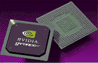
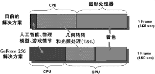

|
|
| 当前位置：电脑报电子版 > 1999 年 > 37 期 > 硬件周刊 > 图形处理)器——GeForce 256 |
| 《 图形处理器——GeForce 256 》 |
| 8月31日，全世界关心3D硬件的人们，都在等待着nVidia的代号为“NV10”的新一代3D加速芯片的技术公开。nVidia的网站上，一个倒计时时钟显示着：“还有N个小时，世界将会改变！”终于等到那一刻，nVidia开放了早已准备好的一个新目录，用数不清的资料和图片一下就把我给“淹没”了，还好，我还能记住一个古怪而几小时后就已传遍世界的名字：GeForce 256（见图1），nVidia将它称为GPU（图形处理器），而不是3D显示芯片！
GPU的概念 nVidia将GPU定义为：单芯片图形处理器，集成有几何引擎、光照引擎、三角形设置、图形剪裁引擎、纹理渲染引擎，处理能力为每秒1000万个以多边形上。GPU的概念，从字面上说是使3D图形芯片同CPU平起平坐，让GPU成为PC体系中第二重要的核心部件。nVidia的GPU定义从性能上为3D芯片划了一条界限，强调GeForce 256及其后续产品是多么出色（能达到这一标准的3D芯片还真不多），以至于可以再创出一个全新的GPU市场，当然新市场的“游戏规则”也顺理成章可以部分地重新制定了。GeForce 256的名称来源于geometry（几何）的缩写和256位的体系结构。它不同于上一代的Riva TNT2使用工作频率和显示内存位数来划分型号，GeForce 256只有一个版本的芯片，不会再让大家难以分辨，也可能今后的升级版本有另外一个名称。现在量产的GeForce 256芯片已送往各板卡厂商，9月底就可以有相应的显示卡上市了。 对软件厂商来说，GeForce 256不仅仅意味着更高的几何转换、光照、渲染速度以及大大提高的场景和人物复杂程度，更重要的是，终于把空下来的CPU用于处理人工智能、物理模型、人物动作、故事情节等更需要灵活性的工作，正是这些方面才真正关乎游戏的“可玩性” （见图2）。正如nVidia的口号是“从此3D应用将会不同”，3D硬件的飞跃将为软件带来未知的可能性，那些激动人心的新应用（包括新型游戏）又会带来对硬件性能的更大需求。对用户来说，GeForce 256跑得更快、画面更好（虽然也更贵），而且有了它，连Pentium Ⅱ 300也可以有顶级的3D表现（不知CPU厂商会怎么看），当然需要DirectX 7或OpenGL的支持，还得使用在硬件几何、光照处理的新游戏中。 技术的飞跃 GeForce 256的3D性能，同现有的主流3D芯片相比都有着巨大的飞跃，nVidia的总结是：“第一个256位3D处理器，第一个集成的几何变换引擎，第一个集成的动态光照引擎，第一个4像素渲染流水线。”◎几何转换、光照引擎 几何转换、光照操作是3D图形处理任务的前一半，有了GeForce 256集成的几何转换、光照引擎，我们就能够使用硬件实现几何变换和动态光源照射处理，代替以往让CPU浮点单元进行的繁重几何计算过程和利用纹理色彩变化来模拟的光照效果。GeForce 256支持8个硬件光源，每秒可处理1500万个三角形，不过，与50Gflops的惊人浮点能力比较来说，也不算很快。GeForce 256的几何、光照引擎实际上是只有256个指令的DSP（数字信号处理器），就像创新的E－mu 10K1芯片一样，可以通过BIOS和驱动程序的升级，不断发挥出更强大的功能。 ◎4条并行渲染流水线 GeForce 256的QuadPipe渲染引擎具有4条独立的128位渲染流水线并行工作，每个时钟周期可以渲染4个8点取样过滤（类似于三线性过滤）的像素，总体速度为4.8亿过滤的像素/秒，约相当于9.6亿图素/秒（Savage 2000＋为8亿图素/秒）。nVidia没有公布GeForce 256的核心工作效率，但从上述渲染数据上我们可以估算出是120MHz或稍高一些。 ◎加强的带宽 光有高速核心并不能够保证整体速度的提高，因此提高系统带宽是不能不考虑的。一方面GeForce 256拥有独一无二的AGP 4× Fast Write总线，并得到了Intel的认可，AGP 4× Fast Write是将在820（Camino）主板芯片组中出现的一个AGP 2.0功能，允许CPU不通过系统内存、直接向显示芯片传送数据，既避开了瓶颈、又释放了系统内存。另一方面，GeForce 256使用256位显示内存接口（最多128MB显示内存），比以往的128位提高了1倍，即使还未公布的显存频率只有150MHz，也能有4.8GB/s的带宽。 ◎丰富的3D特性 除了那些大家都熟悉的3D特效外，GeForce 256也引入了一些独特的3D特性，当然都是得到DirectX7和OpenGL支持的：Cube Environment Mapping（立方体环境贴图）是最具吸引力的特性，nVidia网站上还专门为它提供了一个演示，它的原理是使用有6个面的立方体纹理为3D场景进行贴图，从而可以很逼真地模拟出光线照射在物体上的效果和反射效果。Vertex Blending（顶点混合）可以使具有复杂解剖结构的游戏人物有更平滑的外观。Particle Systems（粒子系统）就是PS2大肆吹嘘的特殊3D特性之一，特别适合于表现火焰、魔法、武器等。GeForce 256还支持DirectX 6中所有的纹理压缩模式。 市场前景 集成2300万晶体管的GeForce 256，复杂程度达到了Pentium Ⅲ的两倍以上，已经具备了同CPU分庭抗礼的很多条件。从3D体系结构的角度来看，新一代产品集成几何、光照功能，即使不能同3D显示卡的出现相提并论，也是自3D芯片问世以来最大的一次飞跃，它将3D芯片中处理3D显示任务的半条流水线扩充到了一整条。◎横向比较 SONY的新一代家用游戏机PS2的纸面数据非常惊人，因此，也就成了人们心目中3D性能的一个标杆。nVidia声称GeForce 256是移植PS2游戏的优化平台（无怪乎网上谣传Pentium Ⅲ或Athlon加上GeForce 256构成的游戏机将同PS2一决高低）。GeForce 256的3D实力从中可见一斑，那么与其他3D芯片相比又如何呢？ Bitboys的Glaze 3D系列将在明年初上市，尽管还没有几何、光照引擎，但具有同GeForce 256相同的4条像素渲染流水线，速度达12/24亿图素/秒，还有9MB嵌入式内存（总带宽12GB/s），问题是能否如期推出；S3的Savage 2000系列跟得最紧，年底上市，有几何、光照引擎和4条纹理流水线，速度为7亿图素/秒以上，并且比较便宜；3dfx的“Napalm”推迟到11月发布，只知道会有独特的T－Buffer（包括全景抗锯齿、景深、运动模糊等功能），另外，3dfx还在嘲笑GeForce 256的渲染能力太弱，配不上几何、光照部分，可见“Napalm”应该有惊人的32位渲染能力；据说Matrox和ATI也有计划，只是保密工作太好我们不得而知。 ◎业界支持情况 这次nVidia占尽了先机，尽显王者风范。不但AMD，连Intel都声称要同nVidia合作，共同建立未来的PC平台，Intel竟然说Pentium Ⅲ同新一代GUP之间会达到“系统平衡”；至于微软，他们表示DirectX 7是同支持nVidia 合作开发出来的，DirectX 7同GeForce 256的结合将是优秀的Windows娱乐平台。 在游戏开发上方面，GeForce 256更是一呼百应，几乎所有著名的公司都宣布“效忠”nVidia，开发支持几何、光照功能的游戏，包括：Acclaim、Blizard、Bullfrog、EA、Rage等等。光是今年圣诞节前后上市的游戏就有15个以上。 零售显示卡市场，已经有创新、艾尔莎、Guillemot、Canopus、华硕、丽台这6家大厂在生产基于GeForce 256的显示卡，预计在9月底摆上货架。其中，已知创新的3D Blaster GeForce 256卖＄299.00，Guillemot的Maxi Gamer Prophet卖＄249.99。 在OEM原装机市场上，GeForce 256竟然得到了Dell、Gateway、Compaq、Micron、NEC这些大厂的一致“拥护”。据说在OEM市场上一向得意的ATI最近失去了每季度＄1000万的Dell的订单，不知是否是由于GeForce 256的出现。 面临的挑战 GeForce 256尽管各方面都不错，很有王者风范，但它也面临一些挑战。首先，人们接受新事物需要一个过程，硬件加速的几何转换、光照处理是很好的创新，我们也需要它，但从游戏开发商到用户，让整个市场都接受它，不是短期内可以认同的。极端的反面例子是S3TC纹理压缩功能，一年半下来还未被广泛接受。 其次，GPU抢了CPU的工作，人们对CPU性能的需求不再迅速上升，像Intel这样的CPU厂商如何维持他们那种摩尔定律式的升级循环？如果不能找到消耗CPU能力的新应用，看来CPU与GPU不得不正面交锋了。 最后，nVidia使用0.22微米的工艺生产内部集成2300万晶体管的GeForce 256，不仅生产困难，最终成本一定也低不了（最初有人估计芯片售价＄50，现在的估价是＄90）。因此，nVidia现在必须为GeForce 256树立起高档形象：速度、画面双第一。另外，既然GeForce 256是高档产品，现有的Riva TNT2系列还得继续担负起中低档市场主角的重任。 笔者认为，如果不出现意外的话， GeForce 256将是未来一段时期内3D加速芯片中的王者至尊。 (Cloud) |
| 下载本期推荐软件 | 页 首 |
| 《电脑报》版权所有，电脑报网站编辑部设计制作发布 |